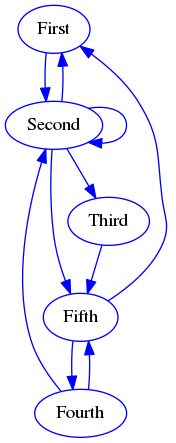
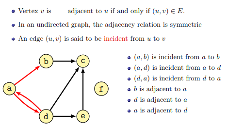
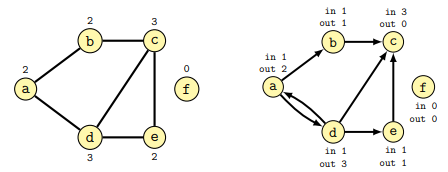
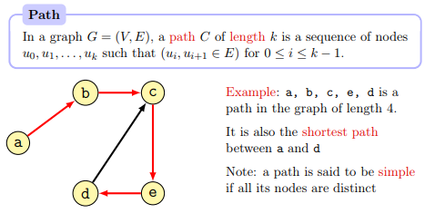
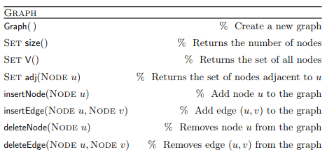
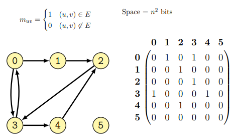
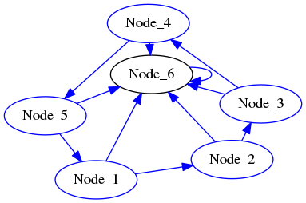
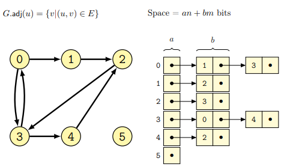
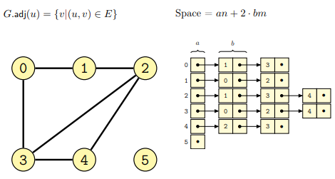

Module 2, Practical 8¶
In this practical we will keep working with data structures. In particular, we will see a very important and quite complex data structure called graph.
Graphs¶
Nodes are most often represented as circles, while edges (relationships) are represented by lines/arrows connecting the nodes. An example follows:
Relations represented by edges can be symmetric (e.g. sibling_of: if \(X\) is sibling of \(Y\) then \(Y\) is sibling of \(X\)) and in this case the edges are just lines rather than arrows. When edges are symmetric the graph is undirected.
If relationships are not symmetric (i.e. \(X \rightarrow Y\) does not imply \(Y \rightarrow X\)) we put an arrow to indicate the direction of the relationship among the nodes and in this case we say the graph is directed.
Some terminology (from the lecture):
The degree of a node is the number of connections it has with other nodes. In directed graphs the in-degree is the number of incoming edges, while the out-degree is the number of outgoing edges.
A path in the graph is a sequence of nodes connected by edges.
Graph ADT¶
Graphs are dynamic data structures in which nodes and edges can be added/removed. The description of the Graph Abstract Data Type follows (from the lecture):
This is the most general definition, as in some cases nodes and edges can only be added and not removed.
There are two classic ways of implementing a Graph: adjacency matrices and linked lists.
Implementation as adjacency matrix¶
A square matrix \(G\) having the size \(N \times N\) where \(N\) is the number of nodes, is used to represent every possible connection among the nodes of the graph. In particular \(G[i,j] = 1\) if the graph has an edge connecting node \(i\) to node \(j\), if that is not the case \(G[i,j] = 0\).
An example of graph as adjacency matrix follows (from lecture):
This representation of a graph has both advantages and disadvantages:
it is quite flexible as it is possible to put weights on the values of the matrix instead of only 0 and 1;
it is quite quick to check the presence of an edge (both ways!): this just requires a lookup in the matrix G;
it uses a lot of space and most of the values often are 0 (sparse matrix, a lot of space is therefore wasted);
in undirected graphs, the matrix is symmetric therefore half of the space could be saved.
Let’s see how we can implement a directed weighted graph as an adjacency matrix in Python.
[1]:
class DiGraphAsAdjacencyMatrix:
def __init__(self):
self.__nodes = list() # a set would be better, but we need an index to define
# the adjacency matrix
self.__matrix = list()
def __len__(self):
"""gets the number of nodes"""
return len(self.__nodes)
def nodes(self):
return self.__nodes
def matrix(self):
return self.__matrix
def __str__(self):
header = "\t".join([n for n in self.__nodes])
data = ""
for i in range(0,len(self.__matrix)):
data += str(self.__nodes[i]) + "\t"
data += "\t".join([str(x) for x in self.__matrix[i]]) + "\n"
return "\t"+ header +"\n" + data
def insertNode(self, node):
#add the node if not there already.
if node not in self.__nodes:
self.__nodes.append(node)
#add a row and a column of zeros in the matrix
if len(self.__matrix) == 0:
#first node
self.__matrix = [[0]]
else:
N = len(self.__nodes)
for row in self.__matrix:
row.append(0)
self.__matrix.append([0 for x in range(N)])
def insertEdge(self, node1, node2, weight):
i = -1
j = -1
if node1 in self.__nodes:
i = self.__nodes.index(node1)
if node2 in self.__nodes:
j = self.__nodes.index(node2)
if i != -1 and j != -1:
self.__matrix[i][j] = weight
def deleteEdge(self, node1,node2):
"""removing an edge means setting its
corresponding slot in the matrix to 0"""
i = -1
j = -1
if node1 in self.__nodes:
i = self.__nodes.index(node1)
if node2 in self.__nodes:
j = self.__nodes.index(node2)
if i != -1 and j != -1:
self.__matrix[i][j] = 0
def deleteNode(self, node):
"""removing a node means removing
its corresponding row and column in the matrix"""
i = -1
if node in self.__nodes:
i = self.__nodes.index(node)
#print("Removing {} at index {}".format(node, i))
if node != -1:
self.__matrix.pop(i)
for row in self.__matrix:
row.pop(i)
self.__nodes.pop(i)
def adjacent(self, node):
"""Your treat! (see exercise 1)"""
def edges(self):
"""Your treat! (see exercise1). Returns all the edges"""
if __name__ == "__main__":
G = DiGraphAsAdjacencyMatrix()
for i in range(6):
n = "Node_{}".format(i+1)
G.insertNode(n)
for i in range(0,4):
n = "Node_" + str(i+1)
six = "Node_6"
n_plus = "Node_" + str((i+2) % 6)
G.insertEdge(n, n_plus,0.5)
G.insertEdge(n, six,1)
G.insertEdge("Node_5", "Node_1", 0.5)
G.insertEdge("Node_5", "Node_6", 1)
G.insertEdge("Node_6", "Node_6", 1)
print(G)
G.insertNode("Node_7")
G.insertEdge("Node_1", "Node_7", -1)
G.insertEdge("Node_2", "Node_7", -2)
G.insertEdge("Node_5", "Node_7", -5)
G.insertEdge("Node_7", "Node_2", -2)
G.insertEdge("Node_7", "Node_3", -3)
print("Size is: {}".format(len(G)))
print("Nodes: {}".format(G.nodes()))
print("\nMatrix:")
print(G)
G.deleteNode("Node_7")
G.deleteEdge("Node_6", "Node_2")
#no effect, nodes do not exist!
G.insertEdge("72", "25",3)
print(G)
Node_1 Node_2 Node_3 Node_4 Node_5 Node_6
Node_1 0 0.5 0 0 0 1
Node_2 0 0 0.5 0 0 1
Node_3 0 0 0 0.5 0 1
Node_4 0 0 0 0 0.5 1
Node_5 0.5 0 0 0 0 1
Node_6 0 0 0 0 0 1
Size is: 7
Nodes: ['Node_1', 'Node_2', 'Node_3', 'Node_4', 'Node_5', 'Node_6', 'Node_7']
Matrix:
Node_1 Node_2 Node_3 Node_4 Node_5 Node_6 Node_7
Node_1 0 0.5 0 0 0 1 -1
Node_2 0 0 0.5 0 0 1 -2
Node_3 0 0 0 0.5 0 1 0
Node_4 0 0 0 0 0.5 1 0
Node_5 0.5 0 0 0 0 1 -5
Node_6 0 0 0 0 0 1 0
Node_7 0 -2 -3 0 0 0 0
Node_1 Node_2 Node_3 Node_4 Node_5 Node_6
Node_1 0 0.5 0 0 0 1
Node_2 0 0 0.5 0 0 1
Node_3 0 0 0 0.5 0 1
Node_4 0 0 0 0 0.5 1
Node_5 0.5 0 0 0 0 1
Node_6 0 0 0 0 0 1
The matrix above represents the following graph:
Download the complete source file: DiGraphAsAdjacencyMatrix.py
Exercises¶
Consider the
DiGraphAsAdjacencyMatrixgraph class. Add the following methods:
adjacent(self, node): given a node returns all the nodes connected to it (both incoming and outgoing);adjacentEdge(self, node, incoming=True): given a node, returns all the nodes close to it (incoming if “incoming=True” or outgoing if “incoming = False”) as a list of pairs (node, other, weight);edges(self): returns all the edges in the graph as pairs (i,j, weight);edgeIn(self, node1, node2): check if the edge node1 –> node2 is in the graph;
Test the code with:
G = DiGraphAsAdjacencyMatrix()
for i in range(6):
n = "Node_{}".format(i+1)
G.insertNode(n)
for i in range(0,4):
n = "Node_" + str(i+1)
six = "Node_6"
n_plus = "Node_" + str((i+2) % 6)
G.insertEdge(n, n_plus,0.5)
G.insertEdge(n, six,1)
G.insertEdge("Node_5", "Node_1", 0.5)
G.insertEdge("Node_5", "Node_6", 1)
G.insertEdge("Node_6", "Node_6", 1)
G.insertNode("Node_7")
G.insertEdge("Node_1", "Node_7", -1)
G.insertEdge("Node_2", "Node_7", -2)
G.insertEdge("Node_5", "Node_7", -5)
G.insertEdge("Node_7", "Node_2", -2)
G.insertEdge("Node_7", "Node_3", -3)
G.deleteNode("Node_7")
G.deleteEdge("Node_6", "Node_2")
#no effect, nodes do not exist!
G.insertEdge("72", "25",3)
print(G)
print("\nNodes connected to Node_6:")
print(G.adjacent("Node_6"))
print("\nNodes connected to Node_4:")
print(G.adjacent("Node_4"))
print("\nNodes connected to Node_3:")
print(G.adjacent("Node_3"))
print("Edges outgoing from Node_3:")
print(G.adjacentEdge("Node_3", incoming = False))
print("Edges incoming to Node_3:")
print(G.adjacentEdge("Node_3", incoming = True))
print("\nEdges incoming to Node_6:")
print(G.adjacentEdge("Node_6", incoming = True))
print("\nEdges incoming to Node_743432:")
print(G.adjacentEdge("Node_743432", incoming = True))
print("\nAll edges:")
print(G.edges())
print("\nIs (Node_4,Node_5) there? {}".format( G.edgeIn("Node_4","Node_5")))
print("Is (Node_4,Node_3) there? {}".format( G.edgeIn("Node_4","Node_3")))
print("Is (Node_3,Node_4) there? {}".format( G.edgeIn("Node_3","Node_4")))
print("Is (Node_6,Node_6) there? {}".format( G.edgeIn("Node_6","Node_6")))
Show/Hide Solution
Extend the
DiGraphAsAdjacencyMatrixclass creating a subclassDiGraphAmAnalyzerand adding the following methods:
getTopConnected_incoming(self): finds the node with the highest number of in-coming connections;getTopConnected_outgoing(self): finds the node with the highest number of out-going connections;hasPath(self, node1,node2)to check if there is a path connecting node1 to node2 (if it exists return the path as a list of pair of nodes, otherwise None;
You can test your methods with the following code:
G = DiGraphAmAnalyzer()
for i in range(6):
n = "Node_{}".format(i+1)
G.insertNode(n)
for i in range(0,4):
n = "Node_" + str(i+1)
six = "Node_6"
n_plus = "Node_" + str((i+2) % 6)
G.insertEdge(n, n_plus,0.5)
G.insertEdge(n, six,1)
G.insertEdge("Node_5", "Node_1", 0.5)
G.insertEdge("Node_5", "Node_6", 1)
G.insertEdge("Node_6", "Node_6", 1)
print("Top connected (outgoing):")
print(G.getTopConnected_outgoing())
print("Top connected (incoming):")
print(G.getTopConnected_incoming())
print("\nAdding edge Node_5 -- 0.5 --> Node_5")
G.insertEdge("Node_5", "Node_5", 0.5)
print("Top connected (outgoing):")
print(G.getTopConnected_outgoing())
print("\nAre Node_1 and Node_4 connected?")
print("{}".format(G.hasPath("Node_1","Node_4")))
print("\nRemoving Node_6")
G.deleteNode("Node_6")
print("Top connected (outgoing):")
print(G.getTopConnected_outgoing())
print("Top connected (incoming):")
print(G.getTopConnected_incoming())
G.insertNode("Node_alone")
G.insertNode("Node_alone2")
G.insertEdge("Node_alone", "Node_alone2", 1)
print("\nAre Node_1 and Node_alone2 connected?")
print(G.hasPath("Node_1", "Node_alone2"))
print("Are Node_alone2 and Node_alone connected?")
print(G.hasPath("Node_alone2", "Node_alone"))
Show/Hide Solution
Implementation as (adjacency) linked list¶
In this case a graph \(G\) is represented as an adjacency linked list, where each node \(N\) has a linked-list of nodes connected to it in \(G\). In the case of directed graphs, every node contains a list of all the nodes reachable through some outgoing edges, while in the case of undirected graphs the list will be of all nodes connected together by means of an edge.
Some examples follow for both the cases of directed
and undirected graphs (from lecture):
The implementation through adjacency linked lists has both advantages and disadvantages:
it is flexible, nodes can be complex objects (with the only requirement of the attribute linking to the neighboring nodes);
in general, it uses less space, only that required by the pointers encoding for the existing edges;
checking presence of an edge is in general slower (this requires going through the list of source node);
getting all incoming edges of a node is slow (requires going through all nodes!). A workaround to this problem is to store not only outgoing-edges but also incoming edges (but this requires more memory).
[4]:
class DiGraphLL:
def __init__(self):
"""Every node is an element in the dictionary.
The key is the node id and the value is a dictionary
with second node as key and the weight as value
"""
self.__nodes = dict()
def insertNode(self, node):
test = self.__nodes.get(node, None)
if test == None:
self.__nodes[node] = {}
#print("Node {} added".format(node))
def insertEdge(self, node1, node2, weight):
test = self.__nodes.get(node1, None)
test1 = self.__nodes.get(node2, None)
if test != None and test1 != None:
#if both nodes exist othewise don't do anything
test = self.__nodes[node1].get(node2, None)
if test != None:
exStr= "Edge {} --> {} already existing.".format(node1,node2)
raise Exception(exStr)
else:
#print("Inserted {}-->{} ({})".format(node1,node2,weight))
self.__nodes[node1][node2] = weight
def deleteNode(self, node):
test = self.__nodes.get(node, None)
if test != None:
self.__nodes.pop(node)
# need to loop through all the nodes!!!
for n in self.__nodes:
test = self.__nodes[n].get(node, None)
if test != None:
self.__nodes[n].pop(node)
def deleteEdge(self, node1,node2):
test = self.__nodes.get(node1, None)
if test != None:
test = self.__nodes[node1].get(node2, None)
if test != None:
self.__nodes[node1].pop(node2)
def __len__(self):
return len(self.__nodes)
def nodes(self):
return list(self.__nodes.keys())
def graph(self):
return self.__nodes
def __str__(self):
ret = ""
for n in self.__nodes:
for edge in self.__nodes[n]:
ret += "{} -- {} --> {}\n".format(str(n),
str(self.__nodes[n][edge]),
str(edge))
return ret
def adjacent(self, node, incoming = True):
"""Your treat! (see exercise 3)"""
def edges(self):
"""Your treat! (see exercise 3). Returns all the edges"""
if __name__ == "__main__":
G = DiGraphLL()
for i in range(6):
n = "Node_{}".format(i+1)
G.insertNode(n)
for i in range(0,4):
n = "Node_" + str(i+1)
six = "Node_6"
n_plus = "Node_" + str((i+2) % 6)
G.insertEdge(n, n_plus,0.5)
G.insertEdge(n, six,1)
G.insertEdge("Node_5", "Node_1", 0.5)
G.insertEdge("Node_5", "Node_6", 1)
G.insertEdge("Node_6", "Node_6", 1)
print(G)
G.insertNode("Node_7")
G.insertEdge("Node_1", "Node_7", -1)
G.insertEdge("Node_2", "Node_7", -2)
G.insertEdge("Node_5", "Node_7", -5)
G.insertEdge("Node_7", "Node_2", -2)
G.insertEdge("Node_7", "Node_3", -3)
print("Size is: {}".format(len(G)))
print("Nodes: {}".format(G.nodes()))
print("Graph:")
print(G)
G.deleteNode("Node_7")
G.deleteEdge("Node_6", "Node_2")
#nodes do not exist! Therefore nothing happens!
G.insertEdge("72", "25",3)
print(G)
print("Nodes: {}".format(G.nodes()))
G.deleteEdge("72","25")
print("Nodes: {}".format(G.nodes()))
print(G)
Node_1 -- 0.5 --> Node_2
Node_1 -- 1 --> Node_6
Node_2 -- 0.5 --> Node_3
Node_2 -- 1 --> Node_6
Node_3 -- 0.5 --> Node_4
Node_3 -- 1 --> Node_6
Node_4 -- 0.5 --> Node_5
Node_4 -- 1 --> Node_6
Node_5 -- 0.5 --> Node_1
Node_5 -- 1 --> Node_6
Node_6 -- 1 --> Node_6
Size is: 7
Nodes: ['Node_1', 'Node_2', 'Node_3', 'Node_4', 'Node_5', 'Node_6', 'Node_7']
Graph:
Node_1 -- 0.5 --> Node_2
Node_1 -- 1 --> Node_6
Node_1 -- -1 --> Node_7
Node_2 -- 0.5 --> Node_3
Node_2 -- 1 --> Node_6
Node_2 -- -2 --> Node_7
Node_3 -- 0.5 --> Node_4
Node_3 -- 1 --> Node_6
Node_4 -- 0.5 --> Node_5
Node_4 -- 1 --> Node_6
Node_5 -- 0.5 --> Node_1
Node_5 -- 1 --> Node_6
Node_5 -- -5 --> Node_7
Node_6 -- 1 --> Node_6
Node_7 -- -2 --> Node_2
Node_7 -- -3 --> Node_3
Node_1 -- 0.5 --> Node_2
Node_1 -- 1 --> Node_6
Node_2 -- 0.5 --> Node_3
Node_2 -- 1 --> Node_6
Node_3 -- 0.5 --> Node_4
Node_3 -- 1 --> Node_6
Node_4 -- 0.5 --> Node_5
Node_4 -- 1 --> Node_6
Node_5 -- 0.5 --> Node_1
Node_5 -- 1 --> Node_6
Node_6 -- 1 --> Node_6
Nodes: ['Node_1', 'Node_2', 'Node_3', 'Node_4', 'Node_5', 'Node_6']
Nodes: ['Node_1', 'Node_2', 'Node_3', 'Node_4', 'Node_5', 'Node_6']
Node_1 -- 0.5 --> Node_2
Node_1 -- 1 --> Node_6
Node_2 -- 0.5 --> Node_3
Node_2 -- 1 --> Node_6
Node_3 -- 0.5 --> Node_4
Node_3 -- 1 --> Node_6
Node_4 -- 0.5 --> Node_5
Node_4 -- 1 --> Node_6
Node_5 -- 0.5 --> Node_1
Node_5 -- 1 --> Node_6
Node_6 -- 1 --> Node_6
Download the complete source file: DiGraphLL.py
Exercises¶
Consider the
DiGraphLLgraph class. Add the following methods:
adjacent(self, node): given a node returns all the nodes connected to it (both incoming and outgoing);adjacentEdge(self, node, incoming=True): given a node, returns all the nodes close to it (incoming if “incoming=True” or outgoing if “incoming = False”) as a list of pairs (node, other, weight);edges(self): returns all the edges in the graph as pairs (i,j, weight);edgeIn(self, node1, node2): check if the edge node1 –> node2 is in the graph;
Test your methods with the test code from the previous exercise, changing DiGraphAsAdjacencyMatrix with DiGraphLL.
Show/Hide Solution
Extend the
DiGraphLLclass creating a subclassDiGraphLLAnalyzerby adding the following methods:
getTopConnected_incoming(self): finds the node with the highest number of in-coming connections;getTopConnected_outgoing(self): finds the node with the highest number of out-going connections;hasPath(self, node1,node2)to check if there is a path connecting node1 to node2 (if it exists return the path as a list of pair of nodes, otherwise None;
Test your class with the following code:
G = DiGraphLLAnalyzer()
for i in range(6):
n = "Node_{}".format(i+1)
G.insertNode(n)
for i in range(0,4):
n = "Node_" + str(i+1)
six = "Node_6"
n_plus = "Node_" + str((i+2) % 6)
G.insertEdge(n, n_plus,0.5)
G.insertEdge(n, six,1)
G.insertEdge("Node_5", "Node_1", 0.5)
G.insertEdge("Node_5", "Node_6", 1)
G.insertEdge("Node_6", "Node_6", 1)
print("Top connected (outgoing):")
print(G.getTopConnected_outgoing())
print("Top connected (incoming):")
print(G.getTopConnected_incoming())
print("\nAdding edge Node_5 -- 0.5 --> Node_5")
G.insertEdge("Node_5", "Node_5", 0.5)
print("Top connected (outgoing):")
print(G.getTopConnected_outgoing())
print("\nAre Node_1 and Node_4 connected?")
print("{}".format(G.hasPath("Node_1","Node_4")))
print("\nRemoving Node_6")
G.deleteNode("Node_6")
print("Top connected (outgoing):")
print(G.getTopConnected_outgoing())
print("Top connected (incoming):")
print(G.getTopConnected_incoming())
G.insertNode("Node_alone")
G.insertNode("Node_alone2")
G.insertEdge("Node_alone", "Node_alone2", 1)
print("\nAre Node_1 and Node_alone2 connected?")
print(G.hasPath("Node_1", "Node_alone2"))
print("Are Node_alone2 and Node_alone connected?")
print(G.hasPath("Node_alone2", "Node_alone"))
Show/Hide Solution